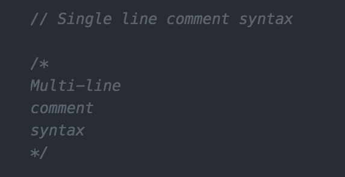
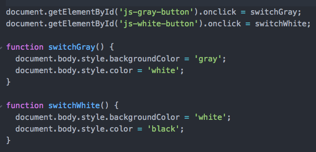

What did you learn last lesson?
What is programming?
Programming is the task of writing instructions in a language that the computer can understand to then perform those instructions.
Computers can perform tasks extremely quickly, but developers need to programmatically break down those tasks to provide step-by-step instructions to the computer.
What is JavaScript?
- It is NOT Java!
- Originally called Mocha, then LiveScript, then JavaScript, then ECMAScript (currently ES2015)
- A language that was created in 10 days by Brendan Eich (May 1995)
- Cross-platform scripting language (executes a series of commands without being compiled)
- Loosely typed language (you do not declare the data types of variables explicitly)
What can you do with it?
A lot!
- Add interactivity (jQuery)
- Single Page Applications (React, Vue.js)
- Analytics, testing (Google Analytics, Optimizely, Mouse Flow)
- Data visualisation (D3.js)
- 3D rendering in the browser (Three.js)
- Native application development (React Native)
- Plus much more!
Our focus: interactivity
With regard to interactivity in JavaScript we will be repeatedly breaking down our code into 3 distinct steps:
- Event target (find an element(s) that will trigger an action)
- Event listener (listen for that action)
- Event handler (perform an output as a result of that action)
Pseudo code
Pseudo code
A great way to break down a problem into small chunks is to use pseudo code.
Pseudo code is usually typed using comments, so that it has no effect on the program being written. It is typically written in a mixture of natural language and high-level programming constructs.
JS Comments
These comments for pseudo-code can be either single line or multi-line syntax:
We want to build a thermostat that checks the temperature every 10 minutes and aims to keep the temperature at a perfect level for us.
Let's pseudo code it together...
Task: In groups, pseudo code a Rock, Paper, Scissors game. The game has two players and is first to 3.
JavaScript Syntax
Let's have a look at the JavaScript syntax by building out a colour scheme switcher for a web page.
A few things we saw in the code along
The use of semi-colons as line terminators
Don't let JavaScript try to insert semi-colons for you, be sure to use semi-colons. However, you'll see that you don't actually need them after you declare a function.
The keyword 'document'
Serves as an entry point into the web page's content. Another common keyword used in JavaScript is 'window'.
Named functions
Using named functions to control the flow of code execution is a key concept in any programming language (but we'll get to that next week).
A constructive use for IDs!!!
Codepen task:
-
Make the slow down light change to green instead of purple when the button is clicked.
-
Get the go light working when the user clicks the button.
Key Takeaways
-
JavaScript is a programming language that can run in the browser.
-
It can be used for many things, including adding interactivity to a site.
-
Pseudo code is a commonly used strategy to break problems down into small steps before actually writing any functional code.